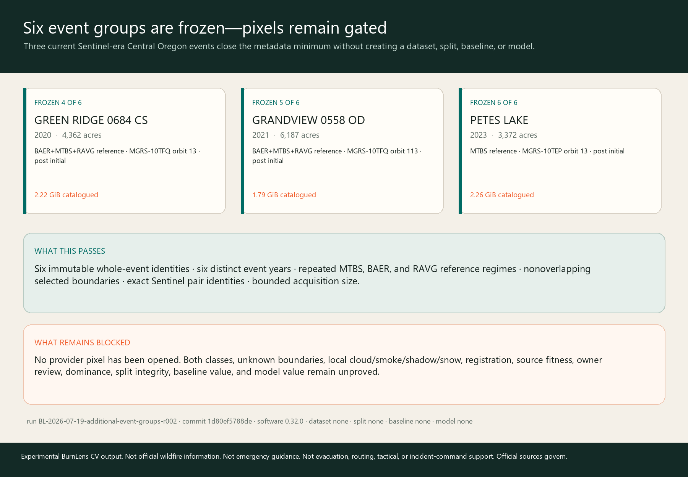

SIX_WHOLE_EVENT_GROUPS_FROZEN_NO_DATASET
Green Ridge (2020), Grandview (2021), and Petes Lake (2023) win the predeclared pool-complement ranking. Exact Sentinel pairs are frozen; provider pixels remain unopened.

ADDITIONAL-EVENT-GROUP-PLAN-2026-001 · run BL-2026-07-19-additional-event-groups-r002 · commit 1d80ef5788ded4eb0f736120fb9023cc1919ea41Candidate pool and exact scene identities
| Event | Time / size | Official reference programs | Exact Sentinel pair | Disposition |
|---|---|---|---|---|
WHYCHUS 0814 CSOR4441212141120170811 | 2017 1,888 acres | MTBS | S2A_MSIL2A_20170722T185921_N0500_R013_T10TFQ_20230913T000011S2A_MSIL2A_20170831T185921_N0500_R013_T10TFQ_20230831T170743 | DEFERRED_COMPARABLE_RESERVE LOWER_PREDECLARED_POOL_COMPLEMENT_SCORE |
GREEN RIDGE 0684 CSOR4446712160520200817 | 2020 4,362 acres | BAER+MTBS+RAVG | S2B_MSIL2A_20200810T185919_N0500_R013_T10TFQ_20230509T050550S2B_MSIL2A_20200929T190109_N0500_R013_T10TFQ_20230427T010543 | FROZEN_FOR_BOUNDED_ACQUISITION |
GRANDVIEW 0558 ODOR4446612140020210711 | 2021 6,187 acres | BAER+MTBS+RAVG | S2B_MSIL2A_20210603T184919_N0500_R113_T10TFQ_20230130T001253S2B_MSIL2A_20210723T184919_N0500_R113_T10TFQ_20230131T130926 | FROZEN_FOR_BOUNDED_ACQUISITION |
PETES LAKEOR4396912190120230825 | 2023 3,372 acres | MTBS | S2A_MSIL2A_20230721T185921_N0510_R013_T10TEP_20240911T103205S2A_MSIL2A_20231029T190511_N0510_R013_T10TEP_20241106T074945 | FROZEN_FOR_BOUNDED_ACQUISITION |
WHITEWATEROR4470812185620170724 | 2017 11,750 acres | BAER+MTBS+RAVG | S2B_MSIL2A_20170717T185919_N0500_R013_T10TEQ_20230916T160155S2B_MSIL2A_20171005T190229_N0500_R013_T10TEQ_20231027T214053 | DEFERRED_COMPARABLE_RESERVE LOWER_PREDECLARED_POOL_COMPLEMENT_SCORE |
Why these three
- Maximize event years absent from the existing 2017/2018/2024 pool.
- Maximize official reference programs repeated across selected events.
- Maximize minimum representative-point separation.
- Use stable fire IDs as the final tie-break.
Actual score: 3 new years, 3 repeated selected programs, 12.708 km minimum selected separation.
event-green-ridge-0684-cs-2020↔event-grandview-0558-od-2021: 12.708 kmevent-green-ridge-0684-cs-2020↔event-petes-lake-2023: 61.269 kmevent-grandview-0558-od-2021↔event-petes-lake-2023: 64.190 km
Distance is a disclosed diagnostic, not proof of ecological independence; exact event, scene, geography, and time IDs are the leakage units.
Acquisition and leakage contract
FROZEN_METADATA_ONLY_ACQUIRE_ONE_EVENT_AT_A_TIME
For each event, authenticate, download exact bytes into ignored storage, hash without overwrite, inspect archive/metadata/notices, native grids, CRS, nodata, SCL, local clouds/smoke/shadow/snow, registration, class and unknown-region feasibility before advancing the next event.
- Event
- All future chips, regions, labels, or derivatives from one fire stay in one eventual role.
- Scene
- Both exact Sentinel scenes and every derived band/mask stay with their event group.
- Geography
- Overlapping MTBS boundaries or derived AOIs may not cross eventual roles.
- Time
- Products in the same event window may not cross eventual roles.
- Partition
- No train/validation/test assignment exists. Pixel/source fitness, accepted regions in both classes, unknown boundaries, dominance, and never-tuned transfer gates still precede any split.
Terms and source roles
RESOLVED_FOR_PUBLIC_METADATA_AND_BOUNDED_SENTINEL_ACQUISITION_PLANNING
- MTBS / BAER / RAVG
- Official MTBS material is current, revisable remote-sensing reference; cite USGS and USDA Forest Service and preserve product-specific notices before pixel use.
- Sentinel
- CDSE terms provide free, full, and open Sentinel data access subject to the Sentinel legal notice; portal content restrictions do not silently transfer to Sentinel data.
- Next terms gate
- Recheck exact archive notices and product terms before retaining, redistributing, or publishing any provider bytes or derived pixels.
- MTBS Program — product identities, revisions, scale, boundaries, and limitations
- MTBS Program — analyst interpretation and thematic uncertainty
- Copernicus Data Space Ecosystem — current STAC endpoint and query behavior
- Copernicus Data Space Ecosystem — current Sentinel access and legal-notice precedence
Permitted claims
- Current official metadata freezes three additional comparable whole-event acquisition groups.
- The six-event minimum is met at metadata identity level only.
- Exact Sentinel product identities and bounded catalogue sizes are acquisition plans, not pixel fitness.
Prohibited claims
- No selected product has been downloaded or locally inspected in this checkpoint.
- No MTBS, BAER, RAVG, dNBR, SCL, boundary, owner response, or absence is automatic label truth.
- No accepted dataset, split, baseline, model, metric, field validation, official status, endorsement, or operational readiness exists.
Binding limitations
- Catalogue cloud is tile-level metadata and does not establish local valid pixels over a fire.
- MTBS mappings are analyst-interpreted and may be revised; boundaries are not incident perimeters or field truth.
- Grandview and Green Ridge are geographically closer than the other selected pairings; event IDs and nonoverlapping boundaries prevent direct leakage but do not eliminate spatial autocorrelation.
- The selected pool is Central Oregon and portfolio-bounded; it does not establish broad geographic generalization.
- Owner-confirmed prototype labels remain one-owner evidence, not independent ground truth or inter-rater validation.
Phase and portfolio comparison
- Phase Two
- Passes the six-event metadata identity and source-regime planning gate while leaving data, label, split, and baseline fitness explicitly unproved.
- Portfolio
- Strengthens the portfolio by showing a reproducible event-level acquisition contract and honest restraint before expensive downloads or training.
- Next checkpoint
- Acquire and gate the first frozen event end to end; advance the second only after exact bytes, terms, native-pixel QA, rendered evidence, and reconstruction pass.
Traceability
- Repository / issue
- drwbkr1/burnlens-deschutes / #466
- Source snapshot
ADDITIONAL-EVENT-GROUP-SOURCE-2026-001·3d6ca59b8071461aa925a3b270300deea1f53c8bd46aedeaec10ddd5301fc241- Software / target / AOI / label schema
- 0.32.0 /
target-burn-scar-v0.2.0/aoi-darlene3-model-v0.2.0/burn-scar-five-state-schema-v0.1.0 - Application / dataset / split / baseline / model
- None / none / none / none / none
- Run / source commit
BL-2026-07-19-additional-event-groups-r002/1d80ef5788ded4eb0f736120fb9023cc1919ea41
Experimental BurnLens CV output. Not official wildfire information. Not emergency guidance. Not evacuation, routing, tactical, or incident-command support. Official sources govern.